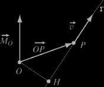

Momento di un vettore rispetto ad un punto
Any vector can be applied to a generic point P in real space. Sia v un vettore applicato nel punto P e O un altro generico punto. Si definisce momento del vettore v rispetto al punto O, chiamato polo, il vettore
MO = OP x v
ortogonale al piano individuato da OP e v. Il modulo di MO è dato da
It is important to examine some general properties of a vector moment. Above all we observe that the result of the calculation does not depends on the position of point P on the application line (i.e. the line which defines the direction of v in real space), but only on the distance of the line from point O. In fact, considering the intersection point H between this line and the normal to it passing through O, we have
MO = OP x v = (OH + HP) x v = OH x v + HP x v = OH x v
because HP is parallel to v, hence their vector produt in null.
Dovunque si prenda P lungo r il momento non cambia in quanto OH rimane lo stesso.
Se si sceglie un altro polo O', il momento rispetto a O' è dato da
MO' = O'P x v
Poiché OP = OO' + O'P abbiamo,
MO = OP x v = OO' x v + O'P x v = OO' x v + MO'
da cui in generale MO ≠ MO': il momento di un vettore dipende dal polo; solo se OO' è parallelo a v, MO = MO'. The above formula establishes the law which rules the change of the point about which the moment is evaluated, i.e., if moment MO of vector v with respect to point O is known, moment MO' of vector v' with respect to another point O' is given by
MO' = MO − OO' x v
If N vectors are applied to the same point of the real space, due to the distributive property with respect to the sum of the vector product, we obtain
MO = OP x v1 + OP x v2 + ... = OP x (v1 + v2 + ...) = OP x v
where v = v1 + v2 + ... is the resultant of the vector sum of the vectors applied to the same point. Thus the overall moment is the moment of the resultant of the sum of the N vectors applied at P.
A moment is a force's tendency to cause rotation.